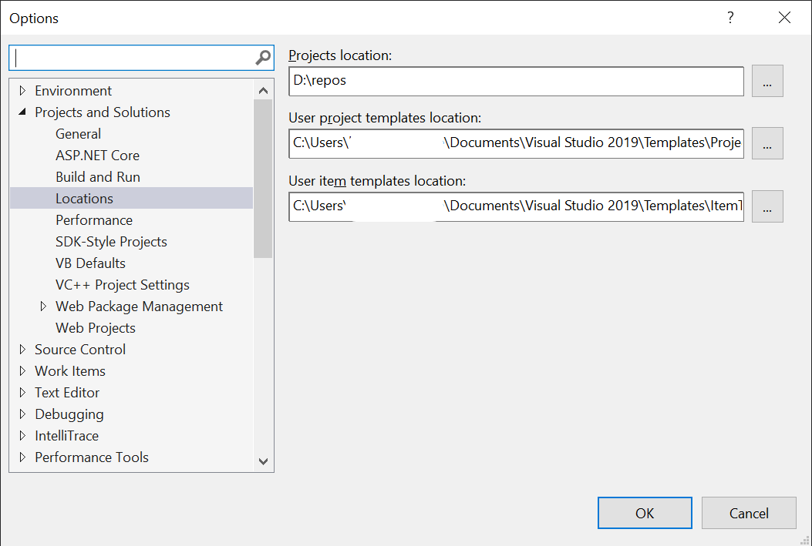

Visual Studio Item Template

Visual Studio Item Template
Visual Studio 에서 코드를 작성할 때, 프로젝트에 새 항목을 추가하고, 구현을 시작합니다.
이 때, 깨끗하게 비워져 있는 코드 파일이 좋을 때도 있지만, 반복적으로 작성하는 코드가 포함되는 경우도 있습니다.
예를 들어, Xamarin Forms 로 모바일 응용프로그램을 작성하는 프로젝트를 작업중일 때, Page 와 ViewModel 을 반복적으로 추가하고, 작성합니다.
Page의 예 .xaml
<core:AppContentPage xmlns="http://xamarin.com/schemas/2014/forms"
xmlns:x="http://schemas.microsoft.com/winfx/2009/xaml"
xmlns:d="http://xamarin.com/schemas/2014/forms/design"
xmlns:mc="http://schemas.openxmlformats.org/markup-compatibility/2006"
xmlns:local="clr-namespace:Kr.Bbon.Product"
xmlns:core="clr-namespace:Kr.Bbon.Core;assembly=Kr.Bbon.Core"
xmlns:behaviors="clr-namespace:Kr.Bbon.Core.Behaviors;assembly=Kr.Bbon.Core"
xmlns:converter="clr-namespace:Kr.Bbon.Core.Converters;assembly=Kr.Bbon.Core"
xmlns:viewmodel="clr-namespace:Kr.Bbon.Product.ViewModels"
xmlns:fa="clr-namespace:Kr.Bbon.Styles.FontAwesome;assembly=Kr.Bbon.Styles.FontAwesome"
xmlns:buttons="clr-namespace:Syncfusion.XForms.Buttons;assembly=Syncfusion.Buttons.XForms"
xmlns:inputLayout="clr-namespace:Syncfusion.XForms.TextInputLayout;assembly=Syncfusion.Core.XForms"
mc:Ignorable="d"
x:Class="Kr.Bbon.Product.Pages.SignUpPage"
x:TypeArguments="viewmodel:SignUpViewModel"
Title="{Binding Title}"
Shell.NavBarIsVisible="False"
NavigationPage.HasNavigationBar="False">
<ContentPage.Resources>
<converter:FirstValidationErrorConverter x:Key="firstValidationErrorCoverter" />
<converter:ValidationResultHasErrorConverter x:Key="validationResultHasErrorConverter" />
</ContentPage.Resources>
<ContentPage.Content>
<!-- 화면을 작성 -->
</ContentPage.Content>
</core:AppContentPage> Page 코드의 예 .xaml.cs
using Kr.Bbon;
using Kr.Bbon.Product.ViewModels;
using System;
using System.Collections.Generic;
using System.Linq;
using System.Text;
using System.Threading.Tasks;
using Xamarin.Forms;
using Xamarin.Forms.Xaml;
namespace Kr.Bbon.Product.Pages
{
[XamlCompilation(XamlCompilationOptions.Compile)]
[Route(RouteUri.SignUp)]
public partial class SignUpPage : AppContentPage<SignUpViewModel>
{
public SignUpPage()
: base()
{
InitializeComponent();
}
}
}ViewModel 코드의 예 .cs
using Kr.Bbon.Core;
using Kr.Bbon.Core.Validations;
using System;
using System.Collections.Generic;
using System.Linq;
using System.Text;
using System.Threading.Tasks;
using System.Windows.Input;
using Xamarin.Forms;
namespace Kr.Bbon.Product.ViewModels
{
public class SignUpViewModel : ViewModelBase
{
public SignUpViewModel()
: base()
{
}
}
}새 페이지 작업 순서
- 클래스 파일을 추가합니다.
- ViewModel 클래스에 반복되는 코드를 작성합니다.
- 컨텐트 페이지 파일을 추가합니다.
- XML 네임스페이스를 추가하고, 필요한 내용을 추가합니다.
- ViewModel 클래스를 구현합니다.
- Page 를 구현합니다.
반복되는 내용을 작성하고 있으면 매우 피곤합니다.
복사하고 붙여넣기를 반복하는 작업
반복되는 작업을 줄이기 위해 아이템 템플릿을 만들어서 사용할 수 있습니다.
Visual Studio 의 프로젝트 메뉴에서 템플릿 내보내기가 가능합니다.

템플릿 내보내기 메뉴를 사용하면 마법사 형식으로 프로젝트를 템플릿으로 만들 것인지, 항목을 아이템 템플릿을 만들 것인지 선택이 가능합니다.

이렇게 아이템 템플릿을 내보내면 아이템 템플릿 디렉터리에 .zip 파일이 추가되어져 있습니다.
👉 아이템 템플릿 디렉터리는 Visual Studio 옵션에서 확인할 수 있어요.


.zip 파일은 아래 항목을 포함하고 있습니다.
- __PreviewImage.png
아이템 템플릿 마법사에서 지정한 미리보기 이미지 파일 - __TemplateIocn.png
아이템 템플릿 마법사에서 지정한 아이콘 이미지 파일 - MyTemplate.vstemplate
- 그리고, 아이템 템플릿으로 내보내기한 파일
👉 .vstemplate 파일의 정보는 방법: 항목 템플릿 만들기 페이지의 링크들에서 확인할 수 있어요.
MyTemplate.vstemplate 파일
편집기로 MyTemplate.vstemplate 파일을 열어보면 요소 이름으로 어떤 내용인지 알 수 있습니다.
TemplateData 요소와 TemplateContent 요소로 구성되어져 있습니다.
TemplateData
템플릿 정보입니다.
TemplateContent
새 항목을 추가할 때 프로젝트에 추가될 파일들의 목록입니다.
나만의 템플릿으로 변경
여기서는 Page 와 ViewModel 을 동시에 포함하는 아이템 템플릿을 작성하는 것을 목적으로 합니다.
제약사항:
- Page 와 ViewModel을 프로젝트에 포함시키기 위해 프로젝트 루트에서 항목을 추가해야 합니다.
템플릿에서 사용되는 템플릿 매개변수$rootnamespace$가 현재 항목을 추가하는 위치를 참조합니다. - 파일의 이름은 Page, ViewModel 접미어를 제외한 이름만 입력합니다.
- 파일이름은 클래스 이름으로 사용가능한 영문자 또는 _ 로 시작하고 문자, 숫자, _ 만으로 입력합니다.
권장사항:
- 아이템 템플릿으로 항목을 추가한 후 Page 파일은 Pages 디렉터리로, ViewModel 파일은 ViewModels 디렉터리로 이동해야 합니다.
MyTemplate.vstemplate 파일의 내용
<VSTemplate Version="3.0.0" xmlns="http://schemas.microsoft.com/developer/vstemplate/2005" Type="Item">
<TemplateData>
<DefaultName>Only name of page without postfix.xaml</DefaultName>
<Name>Kr.Bbon.Product Xamarin Page with ViewModel</Name>
<Description>Page and ViewModels Template with SyncFusion: Create on PROJECT ROOT then move Pages and ViewModels directory.</Description>
<ProjectType>CSharp</ProjectType>
<SortOrder>10</SortOrder>
<Icon>__TemplateIcon.png</Icon>
<PreviewImage>__PreviewImage.png</PreviewImage>
</TemplateData>
<TemplateContent>
<References />
<ProjectItem SubType="Designer" TargetFileName="$fileinputname$Page.xaml" ReplaceParameters="true">Page.xaml</ProjectItem>
<ProjectItem SubType="Code" TargetFileName="$fileinputname$Page.xaml.cs" ReplaceParameters="true">Page.xaml.cs</ProjectItem>
<ProjectItem SubType="Code" TargetFileName="$fileinputname$ViewModel.cs" ReplaceParameters="true">ViewModel.cs</ProjectItem>
</TemplateContent>
</VSTemplate>Page.xaml 파일의 내용
<?xml version="1.0" encoding="utf-8" ?>
<core:AppContentPage xmlns="http://xamarin.com/schemas/2014/forms"
xmlns:x="http://schemas.microsoft.com/winfx/2009/xaml"
xmlns:d="http://xamarin.com/schemas/2014/forms/design"
xmlns:mc="http://schemas.openxmlformats.org/markup-compatibility/2006"
xmlns:local="clr-namespace:$rootnamespace$"
xmlns:core="clr-namespace:Kr.Bbon.Core;assembly=Kr.Bbon.Core"
xmlns:behaviors="clr-namespace:Kr.Bbon.Core.Behaviors;assembly=Kr.Bbon.Core"
xmlns:converter="clr-namespace:Kr.Bbon.Core.Converters;assembly=Kr.Bbon.Core"
xmlns:viewmodel="clr-namespace:$rootnamespace$.ViewModels"
xmlns:fa="clr-namespace:Kr.Bbon.Styles.FontAwesome;assembly=Kr.Bbon.Styles.FontAwesome"
xmlns:buttons="clr-namespace:Syncfusion.XForms.Buttons;assembly=Syncfusion.Buttons.XForms"
xmlns:inputLayout="clr-namespace:Syncfusion.XForms.TextInputLayout;assembly=Syncfusion.Core.XForms"
mc:Ignorable="d"
x:Class="$rootnamespace$.Pages.$fileinputname$Page"
x:TypeArguments="viewmodel:$fileinputname$ViewModel"
Title="{Binding Title}"
Shell.NavBarIsVisible="False"
NavigationPage.HasNavigationBar="False">
<ContentPage.Resources>
<converter:FirstValidationErrorConverter x:Key="firstValidationErrorCoverter" />
<converter:ValidationResultHasErrorConverter x:Key="validationResultHasErrorConverter" />
</ContentPage.Resources>
<ContentPage.Content>
<AbsoluteLayout HorizontalOptions="FillAndExpand"
VerticalOptions="FillAndExpand"
Padding="0">
<ScrollView Orientation="Vertical"
AbsoluteLayout.LayoutBounds="1.0, 1.0, 1.0, 1.0"
AbsoluteLayout.LayoutFlags="All"
HorizontalOptions="FillAndExpand"
Padding="0, 0, 0, 0">
<StackLayout Orientation="Vertical">
<!-- Content here!! -->
<Label Text="Hello Xamarin" />
</StackLayout>
</ScrollView>
<StackLayout IsVisible="{Binding IsBusy}"
AbsoluteLayout.LayoutBounds="1.0, 1.0, 1.0, 1.0"
AbsoluteLayout.LayoutFlags="All"
HorizontalOptions="FillAndExpand"
VerticalOptions="FillAndExpand"
Orientation="Vertical"
BackgroundColor="#50000000">
<ActivityIndicator HorizontalOptions="Fill"
VerticalOptions="CenterAndExpand"
IsRunning="True" />
</StackLayout>
</AbsoluteLayout>
</ContentPage.Content>
</core:AppContentPage>Page.xaml.cs 파일의 내용
using Kr.Bbon.Core;
using $rootnamespace$.ViewModels;
using System;
using System.Collections.Generic;
using System.Linq;
using System.Text;
using System.Threading.Tasks;
using Xamarin.Forms;
using Xamarin.Forms.Xaml;
namespace $rootnamespace$.Pages
{
[XamlCompilation(XamlCompilationOptions.Compile)]
[Route(RouteUri.$fileinputname$)]
public partial class $fileinputname$Page : AppContentPage<$fileinputname$ViewModel>
{
public $fileinputname$Page()
: base()
{
InitializeComponent();
}
}
}ViewModel.cs 파일의 내용
using Kr.Bbon.Core;
using Kr.Bbon.Core.Validations;
using System;
using System.Collections.Generic;
using System.Linq;
using System.Text;
using System.Threading.Tasks;
using System.Windows.Input;
using Xamarin.Forms;
namespace $rootnamespace$.ViewModels
{
public class $fileinputname$ViewModel : ViewModelBase
{
#region CONSTANTS
#endregion
#region Constructors
public $fileinputname$ViewModel()
: base()
{
Title = "Title Here";
}
#endregion
#region Commands
#endregion
#region Properties
#endregion
protected override void InitializeCommands()
{
// Initialize Commands
base.InitializeCommands();
}
protected override void AddValidations()
{
base.AddValidations();
// Add properties validation rule
}
#region Methods
#endregion
#region Properties private fields
#endregion
#region local variables
#endregion
}
}해당 파일을 하나의 .zip 파일로 내보내기 합니다.
.zip 파일은 아래와 같이 모든 파일을 포함하고 있어야 합니다.
MyXamarin.PageWithViewMode.zip
- __PreviewImage.png
- __TemplateIcon.png
- MyTemplate.vstemplate
- Page.xaml
- Page.xaml.cs
- ViewModel.cs아이템 템플릿 .zip 파일을 아이템 템플릿 디렉터리에 복사합니다.
Visual Studio 가 실행중이면 재시작해야 추가된 아이템 템플릿을 읽어 들입니다.
솔루션 탐색기 혹은 파일 메뉴에서 새 항목 추가 메뉴를 시작하면 추가한 아이템 템플릿을 선택할 수 있습니다.

제약조건에 맞게 올바른 이름을 입력하고 추가하면 프로젝트 루트 디렉터리에 파일이 추가됩니다.
이름을 Hello 라고 입력하면, 아래와 같이 파일이 만들어 집니다.
- HelloPage.xaml
- HelloPage.xaml.cs
- HelloViewModel.cs저는 이제 Page 는 Pages 디렉터리에 ViewModel 은 ViewModels 디렉터리에서 관리하므로 각 디렉터리로 이동 후 구현을 시작하면 됩니다.